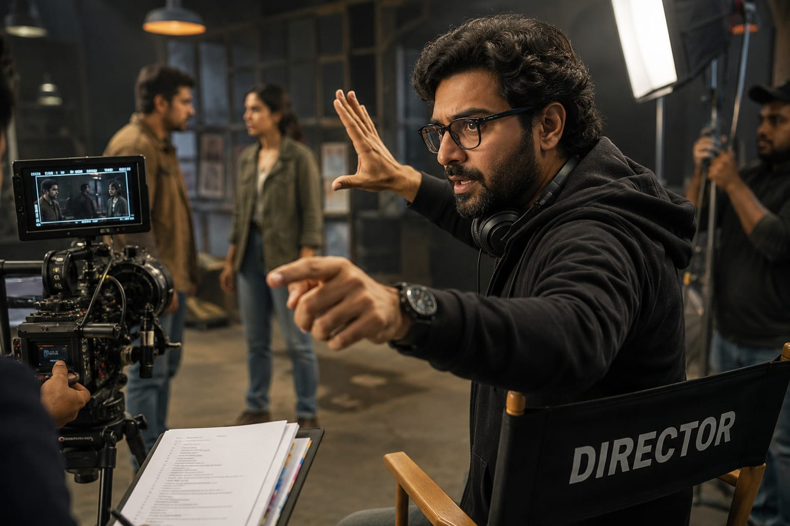

- You watch a movie, web series, advertisement, or YouTube shorts
- someone decides how every scene should look and how the story should be told.
- They guide the actors, camera team, editors, and the entire shooting process.
- That person is called a Film Director. 👉 In simple words: Film Directors turn stories into visual experiences people enjoy watching.
Film Director
🧑🏭 What Do They Do?

🎓 How to Become a Film Director
The courses to pursue this career are given below :
After completing 12th, students can study filmmaking, cinema production, screenwriting, directing, editing, and visual storytelling through professional degree courses.
B.A. / B.Sc. in Film & Television Production
Duration: 3 Years
Eligibility: 10+2 pass (Any stream)
Entrance Exam: WWI Entrance, LPUNEST, or CUET
B.Des(Bachelor of Design)in Film & Video Communication
Duration: 4 Years
Eligibility: 10+2 pass
Entrance Exam: NID DAT
B.A. (Hons) in Cinema / Filmmaking
Duration: 3 Years
Eligibility: 10+2 pass
Entrance Exam: University-specific entrance
Note: Students can later specialize in film direction, screenwriting, cinematography, editing, VFX, or movie production through advanced studies.
After graduation, students can specialize in advanced filmmaking, film direction, screenplay writing, cinema studies, and movie production through postgraduate programs.
M.A. in Film Studies / Filmmaking
Duration: 2 Years
Eligibility: Bachelor’s Degree
Entrance Exam: CUET (PG) or university entrance
Master of Fine Arts (MFA) in Cinema
Duration: 2 Years
Eligibility: Graduation (BFA or B.A. preferred)
Entrance Exam: Portfolio review & interview
Post Graduate Diploma in Film Direction
Duration: 2 Years
Eligibility: Graduation in any stream
Entrance Exam: FTII JET
📝 Exam Details
(Click on the exam name to see full details)
FTII JET CUET PG Portfolio Review Personal InterviewNote: Students can further specialize in directing, screenwriting, cinematography, editing, documentary filmmaking, or OTT content production.
To help students learn filmmaking, screenwriting, visual storytelling, and movie production.
Diploma in Film Direction
Duration: 1 year
Eligibility: 10+2 pass (min mark 50%)
Entrance Exam:AAFT GET
Diploma in Film Making
Duration: 2 years
Eligibility: 10+2 pass
Entrance Exam:Direct Admission
Advanced Diploma in Film Making
Duration: 1 year
Eligibility: 10th/12th pass
Entrance Exam:Direct Admission
Certificate Course in Film Making
Duration: 3 months
Eligibility: Min 18 years
Entrance Exam:Direct Admission
Provider:Annapurna College of Film and Media
How to make Short Film
Duration: 3 months
Eligibility: Min 18 years
Entrance Exam:Direct Admission
Provider:British Film Institute
Certificate Course in Film Making
Duration: 20-24 weeks
Eligibility: 15+ years
Mode:Online
Provider:Ramoji Academy of Movies
Note: These courses help students build storytelling, direction, editing, and filmmaking skills from beginner to advanced level.
Note:
(Age limits, marks, and admission process may vary depending on the college or state.
Below are some colleges that offer these courses.
These courses are available in many colleges and universities across India. You can choose colleges based on your location, budget, and entrance exams.)
🏫 Colleges offering these courses in India
After Class 12
Whistling Woods International (WWI), Mumbai Lovely Professional University (LPU), Punjab National Institute of Design (NID), Ahmedabad Annapurna College of Film and Media, Hyderabad Jain UniversityAfter Graduation
Film and Television Institute of India (FTII), Pune Dr. B.R. Ambedkar University, Delhi Srishti Manipal Institute, Bengaluru Satyajit Ray Film & Television Institute (SRFTI), Kolkata L.V. Prasad College of Media Studies, Chennai, Tamil NaduShort Courses & Certifications
Asian Academy of Film & Television (AAFT), Noida, UP MGM University, Maharashtra IIFA Multimedia, Bengaluru, Karnataka Whistling Woods International (WWI), Mumbai Annapurna College of Film and Media Film and Television Institute of India (FTII), Pune, Maharashtra British Film Institute (BFI) Ramoji Academy of Movies (RAM), Hyderabad, TelanganaSTEP 1
Imagine you are working as a Film Director on a movie set.
STEP 2
You discuss story and scenes with actors and the production team.
STEP 3
Your job is to guide acting, camera angles, lighting, and scene execution.
STEP 4
You plan how to shoot every scene.
STEP 5
You review camera footage and work with editors to improve scenes.
STEP 6
The final film is released in theatres, TV platforms, or streaming services.
STEP 7
If you enjoy storytelling, creativity, and leading a team, this career may suit you.
Where do Film Directors work? (Job Roles + Growth)
Film directors work in : Film production companies, Movie studios, Television companies, Streaming platforms, Advertising agencies, Documentary production companies, and Independent film productions.
🟢 Beginner Roles
Production Assistant (PA)
Handle the physical set setup and assist the senior crew with daily tasks.
Assistant Director (AD)
Manage the daily schedule and operations so the director can focus on the art.
Junior Video Editor
Basic video cuts and storytelling for social media or short digital projects.
🔵 Mid-Level Roles
Film Director
Lead the entire creative vision and guide the actors to bring the story to life.
Screenwriter
Write the scripts, dialogues, and character journeys that the director films.
Cinematographer (DOP)
Manage the lighting and camera angles to create the visual look of the movie.
🟣 Advanced Roles
Showrunner
They act as the creative leader for a series, overseeing both the writing and production.
Creative Director
Manage the artistic vision for commercials and large-scale media campaigns.
Executive Producer
Secure project funding and manage the high-level business strategy of the film.
International Film Studios
You work with Disney or Netflix to direct high-budget films and global web series.
Documentary & Independent Cinema
You travel to film real-life stories for festivals like Cannes or Sundance.
Global Advertising & Commercials
Direct high-end films for international labels in global fashion and tech hubs.
Streaming Content Creation
You lead creative teams to develop original content that reaches over 190 countries.
International Co-Productions
You collaborate on cross-border projects from multiple countries.
(Click Yes or No for each question)
1. Are you a creative person?
2. Do you enjoy shooting videos on your phone or camera?
3. Have you ever felt curious about how scenes are shot in movies?
4. Imagine you are working as a Film Director. You are filming a scene where a mother meets her son after many years. You explain to the actors how they should act and what emotions they should show. You work with the camera and other teams to make sure everyone follows your plan. Finally, the scene is filmed the way you wanted. Do you like this type of work?
5. A movie needs a location for an important scene. You visit different places and choose the one that suits the story. You discuss your choice with the team and decide how the scene should be filmed at that location. Finally, the scene is filmed at the location you selected and becomes part of the movie. Does this type of work interest you?